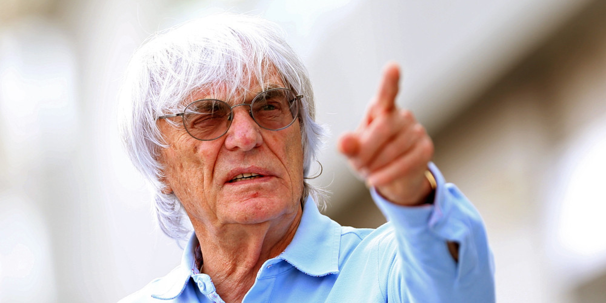

Bernard Charles "Bernie" Ecclestone ( Eng. Bernard Charles "Bernie" Ecclestone , born October 28, 1930 [1] [2] [3] […] , Bangay , Suffolk ) is a British businessman, honorary president of Formula One Management and Formula One Administration. He also owns a stake in Alfa Prema, the parent company of the Formula 1 group of companies. In fact, until January 23, 2017, he was the head of Formula 1 as a whole. [4] [5] Also co-owned Queens Park Rangers Football Club before selling it to Tony Fernandez .
 Ecclestone competed in two Formula One Grands Prix in the 1958 season but never qualified, and then as manager of Stuart Lewis-Evans and Jochen Rindt . In 1972, he acquired the Brabham team, which he led for 15 years [6] . As a team owner, he became a member of the Formula One Constructors Association. His control of racing (which began when he first sold television rights in the late 1970s) was predominantly financial, but under the Accord , Ecclestone and his companies also handled the management, organization and logistics of each Formula One Grand Prix.
Ecclestone competed in two Formula One Grands Prix in the 1958 season but never qualified, and then as manager of Stuart Lewis-Evans and Jochen Rindt . In 1972, he acquired the Brabham team, which he led for 15 years [6] . As a team owner, he became a member of the Formula One Constructors Association. His control of racing (which began when he first sold television rights in the late 1970s) was predominantly financial, but under the Accord , Ecclestone and his companies also handled the management, organization and logistics of each Formula One Grand Prix.
Biography
Ecclestone was born in St. Peter South Elmham, Suffolk , in a village five kilometers south of the town of Bungay. His family soon moved to Bexleyheath , Kent , which is now part of Greater London .

He left school at 16 to work at a local gas plant and pursue his hobby of motorcycles . Immediately after the end of the Second World War, Ecclestone entered the motorcycle parts business and, together with Fred Compton, created the Compton & Ecclestone motorcycle dealership. He first entered racing in 1949 in Formula Three in the 500cc class ,
acquiring a Cooper Mk V in 1951. He competed in a small number of races, mostly at the local Brands Hatch circuit , but placed high on several occasions and in eventually won [6]. His hopes were dealt a blow when he collided with Bill Whitehouse and crashed into an off-track car park. In the end, financial difficulties and risks forced him to end his racing career.